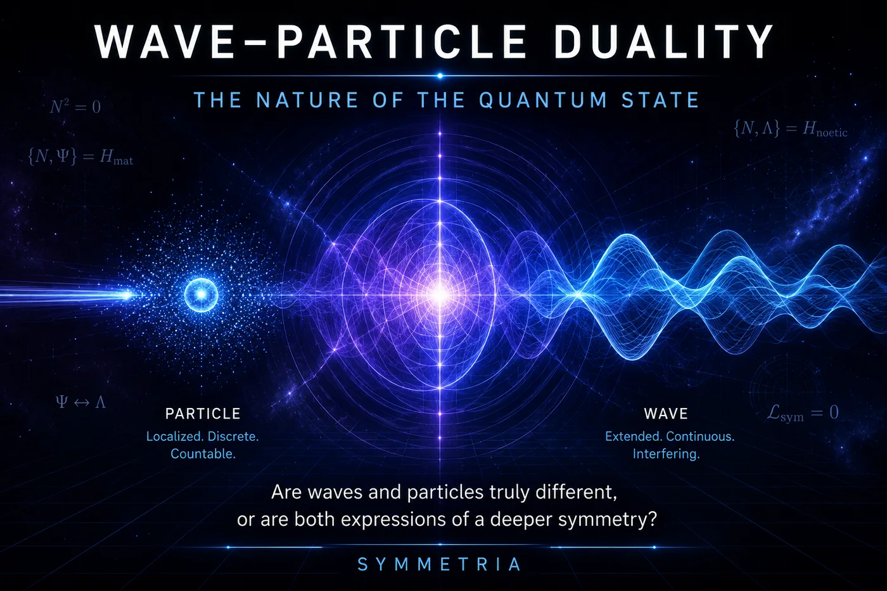
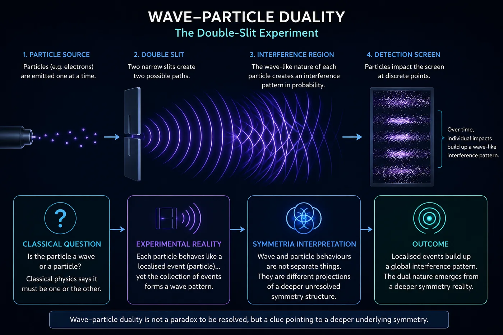
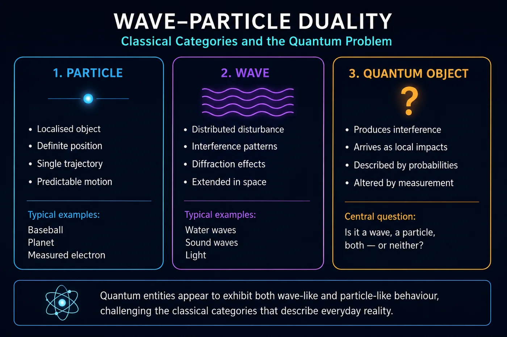
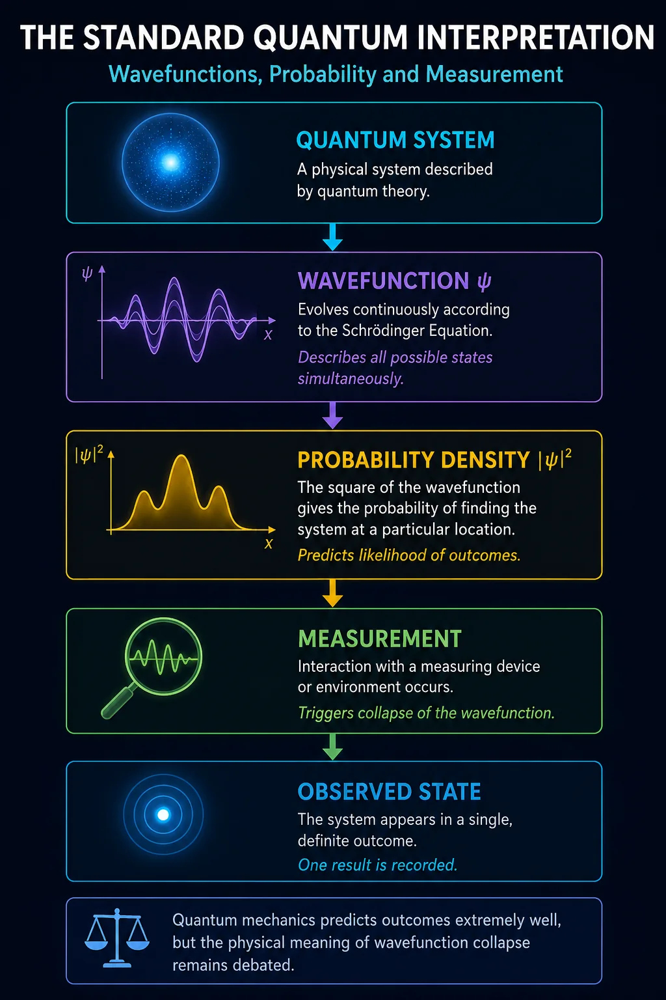
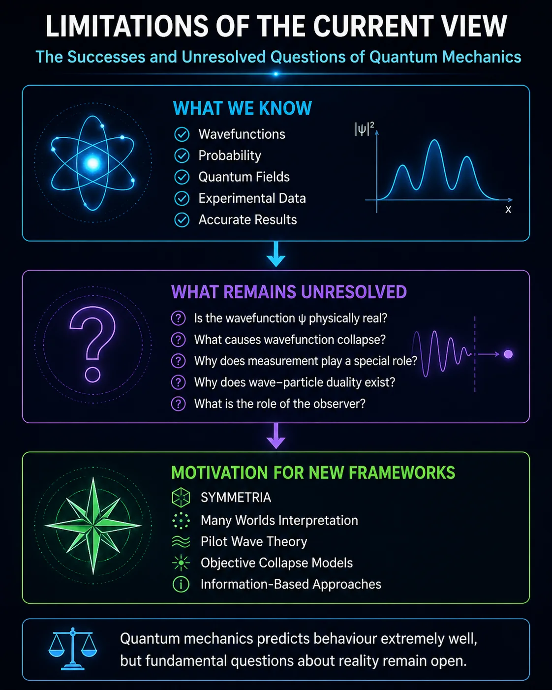
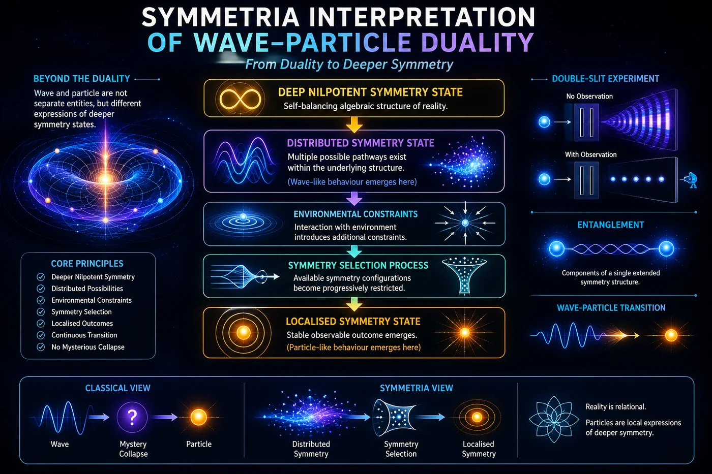
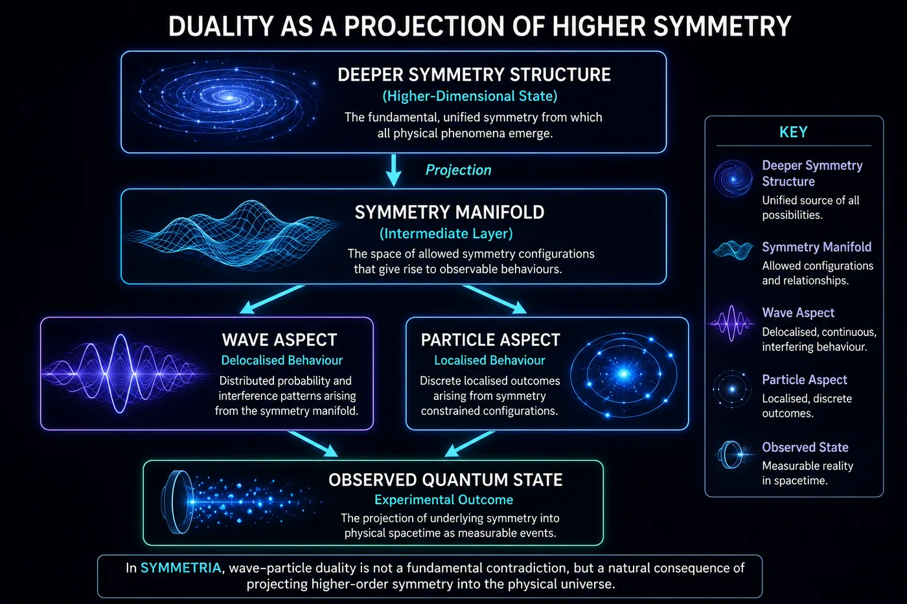

SymTech Ventures
Exploratory deep-tech research
SymTech Ventures
Exploratory deep-tech research
SymTech Ventures
Exploratory deep-tech research
SymTech Ventures
Exploratory deep-tech research
The Nature of the Quantum State
Part I of the SYMMETRIA Discussion Series
June 2026

Cover Illustration: Wave and particle behaviour may represent complementary projections of a deeper symmetry structure.
Few ideas in science are as strange, as successful, or as deeply unsettling as wave-particle duality.
For more than a century, physicists have known that the fundamental constituents of reality refuse to behave in the way common sense suggests they should. Electrons sometimes behave like tiny particles, travelling from one place to another as though they were miniature billiard balls. Yet under different circumstances, those same electrons produce interference patterns identical to those generated by waves. Light exhibits the same contradictory behaviour. In some experiments it behaves as a continuous electromagnetic wave, while in others it arrives in discrete packets of energy known as photons.
The question is obvious: how can something be both a wave and a particle at the same time?
This puzzle lies at the very heart of quantum mechanics. It is not a minor technical issue or an unresolved detail buried deep within advanced mathematics. Rather, it is one of the foundational mysteries upon which the entire quantum framework is built. Every modern technology that depends upon quantum physics — from semiconductors and lasers to magnetic resonance imaging and quantum computers — ultimately rests upon principles that emerged from attempts to understand this strange dual nature of reality.
Historically, the problem emerged during the early twentieth century when physicists discovered that neither the classical particle model nor the classical wave model could fully explain experimental observations. Light, long believed to be a wave, sometimes behaved as though it consisted of individual particles. Matter, long believed to consist of particles, sometimes behaved as though it were a wave. Experiments repeatedly demonstrated that nature appeared unwilling to choose between these two descriptions.
The most famous example is the double-slit experiment. When individual particles such as electrons are fired toward a barrier containing two narrow slits, they do not simply pass through one slit or the other as classical intuition would suggest. Instead, they generate an interference pattern characteristic of waves. Even more remarkably, this pattern emerges when electrons are fired one at a time, as though each electron somehow interferes with itself.
For generations, physicists have learned to work with these phenomena using the mathematical machinery of quantum mechanics. The theory predicts experimental results with extraordinary accuracy and remains one of the most successful scientific frameworks ever developed. Yet despite this success, fundamental questions remain unanswered. What exactly is waving? What precisely is a particle? Does the wavefunction represent something physically real, or merely our knowledge of a system? What happens during measurement? And why should nature behave in this seemingly paradoxical manner at all?
In this first discussion paper of the SYMMETRIA series, we shall examine the problem of wave-particle duality from both the conventional perspective of modern physics and the emerging perspective offered by the SYMMETRIA framework. Rather than treating waves and particles as fundamentally different entities that somehow coexist, SYMMETRIA explores the possibility that both are manifestations of a deeper symmetry structure underlying physical reality.
If this approach is correct, then wave-particle duality may not be a paradox requiring explanation. Instead, it may be one of the first clues that the universe is built upon a more fundamental algebraic architecture than our current theories fully reveal.

Figure 1.1: Wave-particle duality shown through the double-slit experiment. Individual quantum events arrive as localised particle impacts, yet over time they build a wave-like interference pattern. In the SYMMETRIA interpretation, the apparent contradiction arises because both wave and particle behaviour are projected expressions of a deeper unresolved symmetry structure.
At first glance, the distinction between waves and particles appears straightforward. A particle is generally understood to be a localised object occupying a specific position in space at a given moment in time. A wave, by contrast, is an extended disturbance distributed across a region of space. Classical physics treats these as fundamentally different categories of physical behaviour. A cannonball follows a trajectory. A water wave spreads across a pond. There is little ambiguity between the two.
The development of quantum mechanics shattered this comfortable distinction.
The first signs of trouble emerged during the late nineteenth and early twentieth centuries. Light, long regarded as a wave following Maxwell's electromagnetic equations, began exhibiting behaviour that could only be explained if it arrived in discrete packets of energy. The photoelectric effect demonstrated that light interacts with matter as though it consists of individual quanta, later termed photons. Einstein's explanation of this phenomenon helped establish the idea that light possesses particle-like properties.
Yet the story did not end there.
Experiments continued to demonstrate that light also behaved as a wave. It produced interference patterns, diffraction effects, and all the familiar characteristics associated with wave motion. Light seemed capable of displaying both behaviours simultaneously, depending upon the experimental arrangement being used.
Physicists initially hoped that this strange duality might be unique to light. However, the situation became considerably more puzzling when matter itself began exhibiting similar behaviour.
In 1924, Louis de Broglie proposed that particles should possess wave-like properties. Shortly afterwards, experiments confirmed that electrons could produce interference patterns identical to those previously associated only with waves. The implication was profound. Objects traditionally regarded as particles were capable of behaving as waves, just as waves were capable of behaving as particles.
Nowhere is this paradox more vividly demonstrated than in the famous double-slit experiment.
In its simplest form, a beam of particles is directed towards a barrier containing two narrow openings. Classical reasoning suggests that each particle should pass through one slit or the other and produce two distinct bands on a detection screen behind the barrier. Instead, an interference pattern emerges. Such a pattern normally occurs when waves overlap and interact with one another, producing regions of constructive and destructive interference.
The truly astonishing aspect of the experiment appears when particles are emitted one at a time. Even under these conditions, the interference pattern gradually builds up on the screen. Each individual detection appears as a localised particle impact, yet the overall distribution follows the pattern expected of a wave.
This observation raises a deeply troubling question. Through which slit did the particle travel?
Quantum mechanics provides a mathematical answer but not necessarily an intuitive one. Prior to measurement, the particle is described by a wavefunction representing multiple possible paths simultaneously. Only when a measurement is made does a definite outcome appear.
This leads directly to the measurement problem.
If the particle exists in a spread-out quantum state before observation, what exactly causes it to become localised during measurement? What mechanism transforms a probability distribution into a specific event? Why should the act of observation play any role at all?
These questions have generated decades of debate. The Copenhagen Interpretation suggests that the wavefunction collapses when measured. The Many-Worlds Interpretation argues that all outcomes occur in separate branches of reality. Pilot-wave theories propose hidden guiding structures beneath quantum behaviour. Other approaches invoke decoherence, information theory, or alternative mathematical frameworks.
Despite their differences, all of these interpretations attempt to explain the same fundamental mystery: why does nature appear to operate according to two seemingly incompatible descriptions?
The problem becomes even more pronounced when we consider larger conceptual paradoxes such as Schrödinger's Cat. In this famous thought experiment, a cat is placed in a sealed box where its fate depends upon a quantum event. According to a naïve interpretation of quantum mechanics, the cat exists in a superposition of alive and dead states until an observation is made. Although physicists generally agree that this is not a literal description of reality, the thought experiment highlights the conceptual difficulties associated with extending quantum principles into the macroscopic world.
Further complications arise from delayed-choice experiments, quantum eraser experiments, and other sophisticated tests that appear to blur the distinction between past and present, observer and observed, wave and particle. These experiments do not violate the mathematical framework of quantum mechanics, but they challenge our intuitive understanding of what physical reality actually is.
The remarkable success of quantum theory cannot be denied. Its predictions have been verified to extraordinary precision, and modern civilisation depends heavily upon technologies derived from its principles. Yet success in prediction does not necessarily imply understanding. More than a century after the birth of quantum mechanics, physicists still disagree about what the theory is ultimately telling us about the nature of reality.
Wave-particle duality therefore remains one of the deepest mysteries in science. It is not simply a question about electrons or photons. It is a question about the fundamental structure of existence itself. Are particles truly particles? Are waves truly waves? Or are both concepts merely approximations of a deeper reality that has yet to be fully understood?
It is precisely this possibility that motivates the SYMMETRIA approach explored in the following section.

Figure 2.1: Comparison of classical particles, classical waves, and modern quantum objects. Classical particles possess definite positions and trajectories, while waves are distributed structures capable of interference and diffraction. Quantum entities exhibit characteristics of both, creating the central paradox known as wave-particle duality.
The discovery of wave-particle duality forced physicists to abandon many of the assumptions that had dominated science since the time of Newton. Classical physics had successfully described the motion of planets, falling objects, waves, and electromagnetic phenomena, yet it struggled to explain the increasingly strange results emerging from experiments at atomic and subatomic scales.
Rather than attempting to preserve classical concepts, physicists gradually developed an entirely new framework known as quantum mechanics. This theory remains one of the most successful scientific achievements in history. Its predictions have been confirmed to extraordinary precision, and countless modern technologies rely upon its principles. Nevertheless, quantum mechanics often appears less like an explanation of reality and more like a set of mathematical rules describing how reality behaves.
At the centre of quantum mechanics lies the concept of the wavefunction. Usually represented by the Greek letter psi (ψ), the wavefunction contains all the information that can be known about a quantum system. Unlike a classical particle, which possesses a definite position and velocity, a quantum particle is described by a wavefunction that extends across multiple possible states simultaneously.
The wavefunction itself is not directly observable. Instead, what can be observed is the probability distribution derived from it. By squaring the magnitude of the wavefunction, physicists obtain a quantity known as the probability density. This indicates the likelihood of finding a particle at a particular location when a measurement is made.
This interpretation was one of the major breakthroughs of early quantum theory. Rather than predicting exactly where a particle would be found, the theory predicts the probability of finding it in various locations. The wavefunction evolves smoothly according to the Schrödinger Equation, yet individual measurements appear as discrete and seemingly random events.
The double-slit experiment provides a clear illustration of this behaviour.
Before a measurement occurs, the wavefunction associated with an electron spreads through both slits simultaneously and generates an interference pattern. The mathematics treats all available paths as contributing to the final probability distribution. However, when the electron is detected, only a single localised impact appears on the screen.
Quantum mechanics predicts this outcome perfectly. The probability distribution determines where impacts are most likely to occur, and repeated experiments reproduce the expected interference pattern. Yet the theory remains largely silent on what physically happens between emission and detection.
This difficulty leads directly to what is often called the measurement problem.
According to the conventional Copenhagen Interpretation, the wavefunction evolves continuously until a measurement takes place. At that moment, the wavefunction is said to collapse into a single definite state. Prior to observation, multiple possibilities exist. After observation, only one outcome remains.
While this interpretation successfully matches experimental observations, it raises several difficult questions. What exactly constitutes a measurement? Why should observation play a special role in physics? Does consciousness have anything to do with the process? What mechanism causes the collapse itself?
The Copenhagen Interpretation generally avoids answering these questions directly. Instead, it focuses on the practical application of the mathematical formalism. As a result, many physicists regard it as an operational framework rather than a complete description of reality.
A second perspective emerged through the development of Quantum Field Theory (QFT).
In Quantum Field Theory, particles are no longer regarded as fundamental objects. Instead, fields are considered fundamental, and particles are interpreted as localised excitations of those fields. An electron is an excitation of the electron field. A photon is an excitation of the electromagnetic field. Every known particle corresponds to a particular quantum field extending throughout spacetime.
This approach successfully unifies quantum mechanics with special relativity and forms the foundation of the Standard Model of particle physics. It provides an extraordinarily accurate description of particle interactions and has been confirmed repeatedly through experiments conducted at facilities such as CERN.
From the perspective of Quantum Field Theory, wave-particle duality appears somewhat less mysterious. The wave-like behaviour reflects the underlying field, while the particle-like behaviour emerges when energy is exchanged in discrete quanta.
Even so, important questions remain unresolved.
Quantum Field Theory explains how particles behave as field excitations, but it does not fully explain why observation appears to select a particular outcome from many possibilities. The measurement problem survives largely intact. The theory also struggles to provide a clear ontological picture of what reality looks like between measurements.
Additional interpretations have therefore been proposed.
The Many-Worlds Interpretation suggests that wavefunction collapse never occurs. Instead, every possible outcome becomes realised in a branching multiverse. Pilot-wave theories introduce hidden guiding structures that determine particle trajectories. Objective collapse theories propose that wavefunctions physically collapse when systems exceed certain thresholds of complexity.
Each interpretation attempts to address weaknesses in the conventional picture, yet none has achieved universal acceptance.
This situation highlights an important distinction. Modern physics possesses an extraordinarily successful mathematical framework for predicting experimental outcomes. What remains uncertain is the deeper physical meaning behind those mathematical structures.
Wave-particle duality therefore occupies a curious position within science. It is simultaneously one of the most thoroughly tested phenomena in physics and one of the least intuitively understood. Physicists know how to calculate its effects with remarkable accuracy, yet fundamental questions concerning the nature of the wavefunction, the meaning of probability, the role of measurement, and the underlying reality represented by quantum states continue to generate debate more than a century after the birth of quantum theory.
The result is a theory that works exceptionally well in practice but leaves many researchers unsatisfied at a conceptual level. Quantum mechanics tells us what happens. Whether it truly explains why it happens remains one of the deepest questions in modern physics.

Figure 3.1: Conventional quantum mechanics describes physical systems using a wavefunction (ψ), which evolves according to the Schrödinger Equation. The quantity |ψ|² determines the probability of observing a particular outcome. Although highly successful experimentally, the physical meaning of the wavefunction remains debated.
Modern quantum mechanics is one of the most successful scientific theories ever developed. Its predictions have been verified to extraordinary levels of accuracy, and many of the technologies that define modern civilisation rely directly upon its principles. Yet despite this success, profound conceptual questions remain unanswered. Quantum mechanics provides an exceptionally effective mathematical framework for predicting outcomes, but it offers far less clarity regarding the underlying nature of reality itself.
This distinction between predictive success and explanatory understanding lies at the heart of many of the debates that continue within modern physics. While physicists largely agree on how to perform the calculations, there is far less agreement regarding what those calculations actually mean.
One of the most significant limitations of the conventional view concerns the question of ontology. In philosophy, ontology refers to the nature of existence. When applied to quantum mechanics, it asks a seemingly simple question: what is actually real?
Consider the wavefunction. The mathematical formalism treats the wavefunction as the central object of quantum theory. It evolves smoothly according to the Schrödinger Equation and successfully predicts experimental outcomes. Yet physicists remain divided over what the wavefunction represents.
Some interpretations suggest that the wavefunction is a real physical entity that exists independently of observation. Others argue that it is merely a mathematical tool representing our knowledge of a system. Still others propose that it reflects information, probability, or relationships rather than physical reality itself.
The problem is that the theory does not clearly distinguish between these possibilities. The mathematics works equally well regardless of which interpretation is adopted. As a result, one of the most fundamental questions in quantum mechanics remains unresolved: is the wave real, or is it simply a useful description of something deeper?
Closely related to this issue is the measurement problem. According to the conventional formulation of quantum mechanics, a wavefunction evolves continuously until a measurement is made. At that point, the system appears to collapse into a single observed state. Prior to measurement, multiple possibilities exist. After measurement, only one outcome remains.
While this description reproduces experimental observations, it raises difficult conceptual questions. What constitutes a measurement? Why should measurement possess a special status within physics? What mechanism causes the collapse itself? Is collapse a genuine physical process, or does it merely reflect a change in information?
Despite decades of research, no universally accepted answer has emerged. Different interpretations offer different explanations, yet none has achieved broad consensus. Consequently, the measurement problem remains one of the central unresolved issues in modern physics.
Another limitation concerns the role of the observer. Certain interpretations appear to give observation a privileged position within the physical world. This has led to a wide range of philosophical debates concerning consciousness, information, and the relationship between observer and observed.
Most physicists do not believe that human consciousness directly causes wavefunction collapse. Nevertheless, the fact that observation appears within the formalism continues to generate discomfort. In classical physics, reality exists independently of whether anyone is looking at it. In quantum mechanics, the relationship between reality and observation appears considerably more subtle.
Experiments such as delayed-choice tests and quantum eraser experiments have only intensified these concerns. Although these experiments do not violate causality or contradict quantum theory, they challenge many of the intuitive assumptions inherited from classical thinking. They suggest that concepts such as trajectory, locality, and measurement may not possess the simple meanings we often assign to them.
The existence of numerous competing interpretations highlights the extent of the problem. Copenhagen, Many Worlds, Pilot Wave Theory, Objective Collapse Models, Relational Quantum Mechanics, QBism, and various information-based approaches all attempt to explain the same mathematical framework. The fact that so many radically different interpretations can coexist while producing identical experimental predictions suggests that something important remains missing from our understanding.
This situation is unusual within science. Normally, competing theories can be distinguished through experiment. In quantum foundations, however, many disagreements concern the interpretation of the mathematics rather than the mathematics itself. The result is a field in which predictive success far exceeds conceptual clarity.
Ultimately, the greatest limitation of the current view may be that it describes behaviour without fully explaining origin. Quantum mechanics successfully predicts how particles and fields behave, but it does not clearly explain why wave-particle duality exists in the first place. It provides probabilities but not necessarily mechanisms. It describes outcomes but not always underlying causes.
For many physicists, this is entirely sufficient. Science, they argue, should focus on prediction rather than metaphysical speculation. Yet for others, the unresolved conceptual questions indicate that quantum mechanics may represent only part of a deeper story. The extraordinary success of the theory does not eliminate the possibility that a more fundamental framework remains to be discovered.
It is precisely this possibility that motivates alternative approaches such as SYMMETRIA. Rather than accepting wave-particle duality as an irreducible feature of nature, SYMMETRIA asks whether both wave and particle behaviour might emerge from a deeper symmetry structure that underlies them both.

Figure 4.1: Quantum mechanics provides extraordinarily accurate predictions, yet several foundational questions remain unresolved. These include the nature of the wavefunction, the measurement problem, wavefunction collapse, and the role of the observer. Such issues continue to motivate alternative interpretations and theories.
Wave–particle duality is one of the central mysteries of modern physics. Since the birth of quantum mechanics, experiments have repeatedly demonstrated that fundamental entities such as electrons, photons, and other quantum objects exhibit both wave-like and particle-like behaviour. Depending on the experimental arrangement, the same entity may appear as a localised particle or as a distributed wave capable of interference and diffraction.
Traditional interpretations of quantum mechanics typically accept this duality as a fundamental property of nature. The wavefunction provides a mathematical description of all possible states available to a system, while measurement appears to produce a single observable outcome. Although this framework has achieved extraordinary predictive success, it leaves unresolved questions concerning the true nature of the wavefunction, the measurement process, and the apparent transition from possibility to actuality.
Within the SYMMETRIA framework, wave–particle duality is reinterpreted as a manifestation of deeper symmetry structures operating beneath observable reality. Rather than viewing waves and particles as separate or complementary entities, SYMMETRIA proposes that both emerge from a common underlying nilpotent symmetry state. The apparent distinction between wave and particle behaviour arises from different modes of symmetry organisation rather than from fundamentally different physical objects.
At the foundation of this interpretation lies the nilpotent structure inspired by the work of Dr Peter Rowlands. A nilpotent state possesses a unique property: it remains balanced through the cancellation of complementary components. Reality is therefore not constructed from isolated particles moving through empty space, but from self-balancing algebraic relationships existing within a deeper symmetry framework.
In this picture, the wave aspect of a quantum system corresponds to a distributed symmetry configuration. Before observation, the system exists as a coherent set of possible symmetry pathways. These possibilities are not separate universes or independent realities but represent alternative symmetry relationships available within the system's overall structure.
The particle aspect emerges when the distributed symmetry state undergoes localisation. Rather than invoking a mysterious collapse mechanism, SYMMETRIA interprets this process as a transition between symmetry configurations. Observation introduces additional constraints into the system, forcing the distributed symmetry state to reorganise into a more localised form.
This transition can be visualised as a cascade through successive symmetry layers. At higher levels of symmetry, multiple outcomes coexist as potential configurations. As environmental interactions increase, symmetry options become progressively constrained until a stable localised state emerges. The observed particle is therefore the endpoint of a symmetry-selection process rather than the collapse of an abstract probability wave.
Such an interpretation removes some of the conceptual tension associated with traditional wavefunction collapse. The apparent discontinuity between wave and particle behaviour becomes a continuous transformation occurring within a deeper symmetry landscape. What appears as a sudden jump from possibility to actuality is instead a rapid reorganisation of underlying symmetry relationships.
The famous double-slit experiment provides an illustrative example. When an electron passes through the apparatus without observation, the distributed symmetry structure remains unconstrained, allowing interference patterns to emerge naturally. The electron behaves as a wave because the underlying symmetry configuration spans multiple pathways simultaneously.
When a measurement device is introduced, additional constraints alter the available symmetry relationships. The distributed structure can no longer maintain coherence across multiple pathways and instead reorganises into a localised state associated with a specific trajectory. The interference pattern disappears not because consciousness alters reality, but because the symmetry architecture of the system has fundamentally changed.
Entanglement receives a similarly natural interpretation within SYMMETRIA. Conventionally, entangled particles appear connected through correlations that persist regardless of distance. Measurements performed on one particle instantly determine the outcome observed for another, creating the appearance of nonlocal communication.
SYMMETRIA proposes that entangled systems should not be viewed as separate objects linked across space. Instead, they represent components of a single extended symmetry structure. The correlations arise because both particles originate from the same underlying nilpotent configuration and therefore remain aspects of a unified symmetry state.
When a measurement occurs, the entire symmetry structure responds coherently. No signal needs to travel between particles because the particles themselves are secondary manifestations of a deeper shared symmetry framework. What appears as nonlocality emerges naturally from the fact that the fundamental level of reality is organised by relationships rather than by isolated objects.
This perspective suggests that space itself may be an emergent property of deeper symmetry structures. If physical separation exists only at the emergent level, then the persistence of quantum correlations across large distances becomes less surprising. The underlying symmetry state remains unified even when its emergent manifestations appear widely separated in spacetime.
The broader implications are significant. Wave–particle duality, quantum measurement, and entanglement cease to be independent mysteries requiring separate explanations. Instead, they become different manifestations of a common process: the organisation, transformation, and localisation of symmetry states within a nilpotent framework.
In this interpretation, reality is fundamentally relational rather than object-based. Particles are localised expressions of symmetry. Waves are distributed symmetry configurations. Measurement is a symmetry transition. Entanglement is a shared symmetry structure extending beyond apparent spatial separation.
SYMMETRIA therefore reframes quantum mechanics not as a theory of probabilities attached to physical objects, but as a theory of evolving symmetry relationships. The universe becomes a dynamic network of self-balancing algebraic structures whose observable properties emerge through successive layers of symmetry breaking and symmetry selection.
From this perspective, wave–particle duality is not a paradox to be solved. It is a direct consequence of a deeper symmetry architecture underlying physical reality. The apparent duality exists only because observers perceive the endpoints of a much richer process occurring within the hidden algebraic foundations of the universe.

Figure 5.1: In the SYMMETRIA interpretation, wave and particle behaviour emerge from a deeper nilpotent symmetry structure. Observation corresponds to a process of symmetry selection, transforming a distributed symmetry state into a stable localised outcome without requiring a mysterious wavefunction collapse.
One of the most important requirements of any theoretical framework is that it must ultimately make predictions that distinguish it from competing models. While SYMMETRIA remains at an early stage of development, its interpretation of quantum duality suggests several avenues where its predictions may diverge from those of conventional quantum mechanics.
In standard quantum theory, wave-particle duality is generally treated as a fundamental property of quantum systems. Particles exhibit both wave-like and particle-like behaviour depending upon the experimental arrangement, with the wavefunction serving as a probabilistic description of possible outcomes. The theory is extraordinarily successful experimentally, yet it remains largely silent on the deeper ontological nature of the wavefunction itself.
SYMMETRIA proposes a different perspective. Rather than viewing wave and particle states as two descriptions of the same object, the framework suggests they may represent complementary projections of a deeper symmetry structure. In this view, duality is not a mysterious property of matter but a natural consequence of how higher-order symmetry states manifest within lower-dimensional physical reality.
If this interpretation is correct, several potential consequences follow.
First, quantum systems may exhibit subtle coherence effects not predicted by standard formulations. Under specific boundary conditions, symmetry-preserving states could maintain correlations for longer durations than expected, producing measurable deviations in decoherence experiments. Such effects would likely be extremely small and difficult to detect, but advances in quantum computing and precision measurement may eventually make them accessible.
Second, interference phenomena could potentially reveal signatures of hidden symmetry constraints. In conventional quantum mechanics, interference patterns arise purely from wavefunction evolution. SYMMETRIA suggests that interference may also reflect deeper geometric relationships within an underlying symmetry manifold. Carefully designed experiments involving nested interferometers or highly isolated quantum systems might therefore reveal tiny departures from standard probability distributions.
Third, the framework predicts that the distinction between observer and observed system may be less fundamental than generally assumed. If both arise from the same underlying symmetry structure, then observation may represent a particular form of symmetry transition rather than an external measurement process. While highly speculative, this idea could eventually motivate new approaches to understanding the measurement problem.
Several thought experiments naturally emerge from these ideas. One possibility involves examining whether duality transitions can be influenced by altering global symmetry conditions rather than local measurement settings alone. Another involves exploring whether quantum systems embedded within highly coherent environments exhibit behaviour that differs from conventional predictions.
Beyond foundational physics, the duality interpretation suggests potential applications in several technological domains.
In quantum computing, symmetry-based representations could provide alternative approaches to qubit stability and error correction. Rather than protecting information solely through redundancy, future systems might exploit deeper symmetry relationships to maintain coherence.
In vacuum physics, the framework raises questions concerning whether quantum fluctuations reflect underlying symmetry balancing processes rather than purely stochastic behaviour. While no practical mechanism currently exists, such ideas may inspire future investigations into vacuum interactions and energy transfer processes.
At the boundary between classical and quantum systems, SYMMETRIA offers a possible bridge between deterministic macroscopic behaviour and probabilistic microscopic behaviour. Both may emerge from the same symmetry architecture operating at different scales of manifestation.
The predictions outlined here remain preliminary and require substantial mathematical development before they can be rigorously evaluated. Nevertheless, they illustrate an important principle underlying the SYMMETRIA programme: a successful theory must do more than reinterpret existing observations. It must generate new questions, suggest new experiments, and provide opportunities for empirical distinction.
Whether these predictions ultimately prove correct remains uncertain. Their value lies not in certainty, but in offering a roadmap for transforming symmetry from a philosophical concept into a scientifically testable framework.
| Topic | Standard Quantum Mechanics | SYMMETRIA Interpretation |
|---|---|---|
| Wave-Particle Duality | Fundamental property of quantum objects | Projection of deeper symmetry states |
| Interference | Wavefunction superposition | Symmetry manifold projection |
| Measurement | Collapse or state update | Symmetry transition event |
| Decoherence | Environmental interaction | Symmetry coherence degradation |
| Observer Role | External measurement agent | Embedded within symmetry structure |
| Quantum-Classical Boundary | Emergent scale transition | Symmetry-layer transition |
Table 6.1: Components of the Unified Field Operator (UFO) and their corresponding physical functions within the SYMMETRIA framework. Each term represents a distinct symmetry contribution to the overall field structure, illustrating how the known fundamental interactions emerge as specialised expressions of a single underlying unified algebraic system.

Figure 6.1: SYMMETRIA proposes that wave and particle behaviour are not separate physical realities but complementary projections of a deeper symmetry layer. Observable quantum behaviour emerges when higher-order symmetry states are mapped into physical spacetime.
End of Document